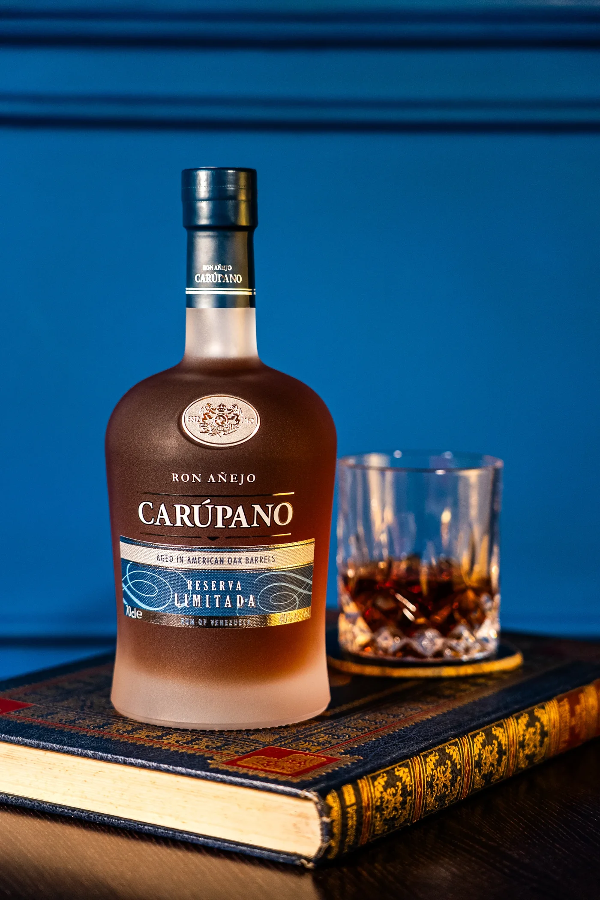
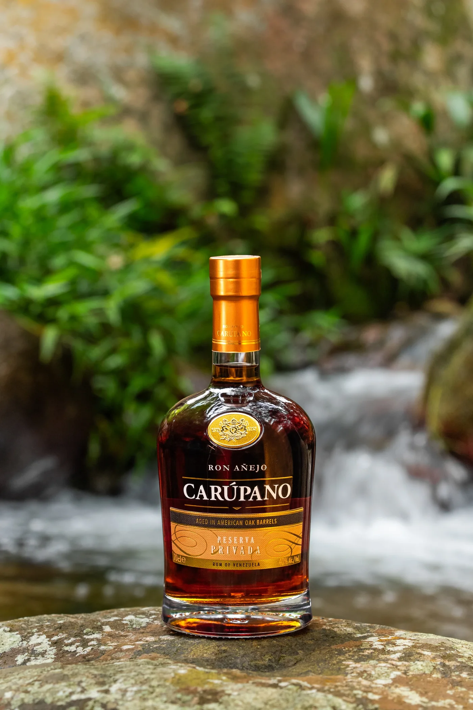
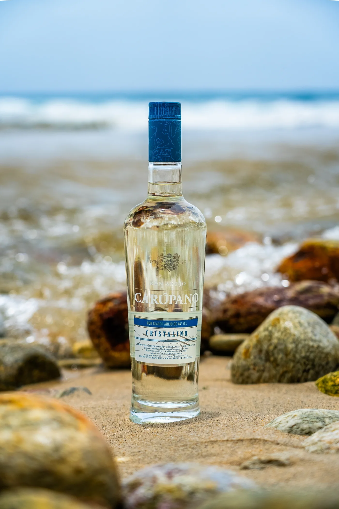
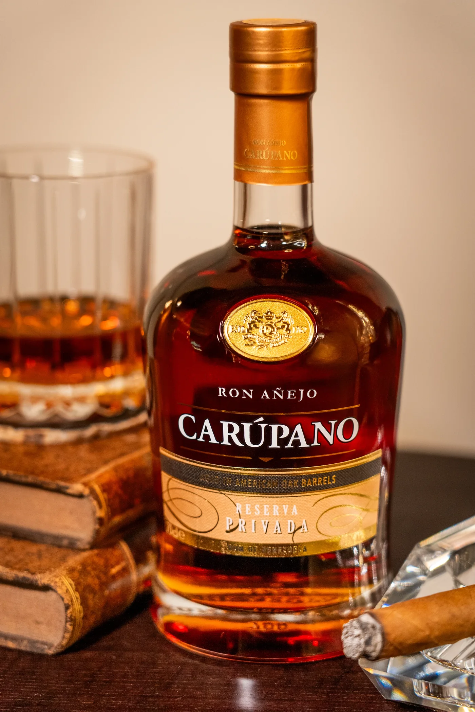
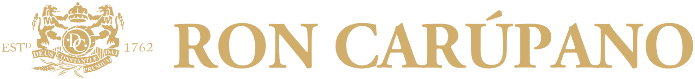
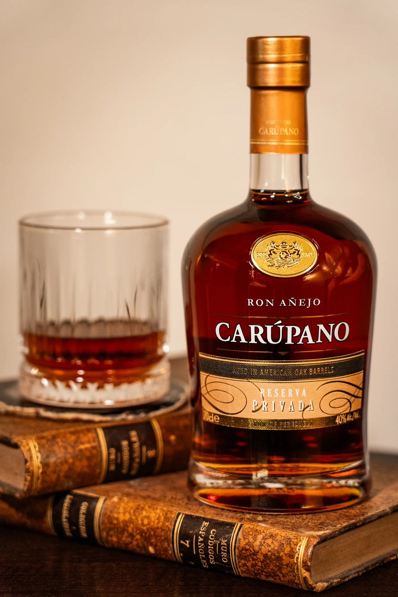
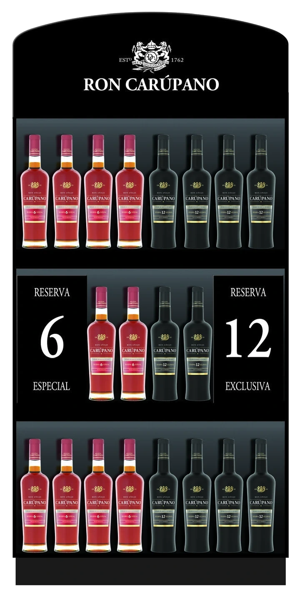
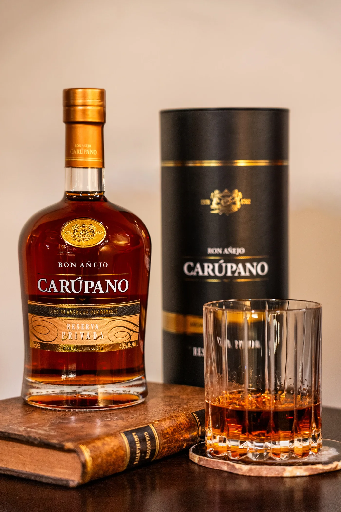
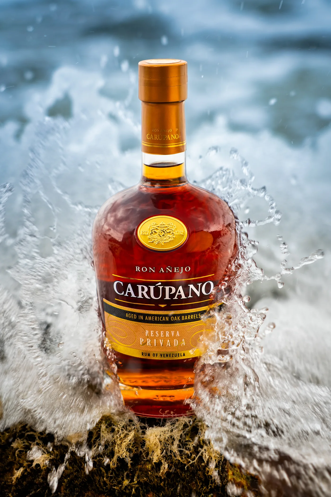

Tiempo transformado por el Caribe.
Una síntesis propia, memorable y flexible que une origen, proceso, producto y experiencia.
Más de dos siglos de historia, un microclima excepcional y una maestría ronera que transforma cada reserva en un Legado Excepcional.
En Carúpano, el tiempo no pasa: se transforma. El Caribe acelera la conversación entre madera, clima y destilado; la maestría le da dirección; y cada botella convierte ese proceso en carácter, profundidad y elegancia venezolana.
La plataforma conecta el legado de la Hacienda Altamira con una ambición contemporánea: elevar el ron venezolano y convertir cada encuentro con la marca en una expresión de excelencia.
Una síntesis propia, memorable y flexible que une origen, proceso, producto y experiencia.
Honrar un legado extraordinario mientras abrimos nuevas formas de descubrir, compartir y celebrar la categoría.
Desde una mezcla social hasta una reserva excepcional, la marca entrega carácter, cuidado y una sensación inequívoca de elección superior.
Ron Carúpano combina más de 260 años de historia, el microclima de Macarapana y la maestría de sus mezclas para crear rones de profundidad, elegancia y personalidad.
Un lujo cálido, sensorial y seguro de sí mismo: excepcional sin ser distante; venezolano sin caer en clichés.
Hacienda Altamira, el Valle de Macarapana, el agua y una historia que comenzó en 1762.
El lugar importa.Calor, humedad y baja altitud aceleran la interacción del ron con la madera.
El Caribe transforma.Conocimiento, intuición y disciplina convierten reservas complejas en perfiles equilibrados.
La experiencia dirige.Una sofisticación cercana, generosa y sensorial, orgullosa de su origen y abierta al mundo.
La excelencia se comparte.Los rasgos no son etiquetas decorativas: orientan cómo decide, habla y se comporta la marca. Selecciona uno para ver su traducción práctica.
Habla desde hechos, experiencia y criterio. No necesita exagerar ni compararse para demostrar su valor.
Tiempo, naturaleza y maestría ronera se encuentran para definir el carácter de Ron Carúpano.

El tiempo es el ingrediente silencioso: profundiza el color, concentra aromas y permite que la madera revele complejidad.
Barricas ex-bourbon de roble blanco americano y un añejamiento cerrado transforman las reservas con pureza, concentración y honestidad.Selección, memoria sensorial y mezcla convierten reservas distintas en una expresión precisa de la casa.
Del descubrimiento y la coctelería a la contemplación y la colección, cada producto cumple un rol claro dentro del universo Carúpano.
El Escudo de los Leones y el logotipo Ron Carúpano forman una firma de prestigio. Su consistencia protege el reconocimiento de la marca en cada formato y punto de contacto.
La versión horizontal es la firma prioritaria. El escudo y “RON CARÚPANO” se mantienen unidos, alineados y con sus proporciones originales.
El espacio mínimo de resguardo equivale a la altura de la mayúscula inicial del logotipo. Ningún texto, imagen o borde debe invadir esta zona.
El escudo y el logotipo se alinean sobre un eje vertical. No deben reacomodarse ni convertirse en una composición improvisada.
“RON CARÚPANO” se presenta en mayúsculas y conserva siempre la tilde. La familia serif aporta herencia, autoridad y carácter editorial.
Dos familias, dos trabajos claramente distintos.
Usar en pocas palabras, a gran escala y con espacio generoso.
Reservas seleccionadas y mezcladas con precisión para revelar profundidad sin perder armonía.
HASTA 21 AÑOS · 40° G.L.Regla simple: Garamond expresa. Inter explica.
La firma debe conservar contraste, proporción, legibilidad y espacio. Estos ejemplos convierten las reglas del manual en decisiones visuales inmediatas.
Pantones y mezclas CMYK tomados de la página 24 del Manual de Marca Ron Carúpano 2023. El valor HEX es una equivalencia digital de referencia.

Entorno real y producto integrado.

Horizonte, luz y materia natural.
Servicio, detalle y color de producto.
La voz de Ron Carúpano transmite experiencia sin presumir, sofisticación sin rigidez y venezolanidad sin recurrir a lugares comunes.
“El tiempo, el Caribe y la maestría se encuentran en cada copa.”
Evocador, propio y sensorial. Habla desde una verdad de marca.
“¡El mejor ron para convertirte en el alma de la fiesta!”
Exagerado, genérico y asociado a resultados sociales o consumo excesivo.
Mostramos consumo consciente, pausado y acompañado de experiencias gastronómicas, culturales o sociales relevantes.
No banalizamos la categoría ni usamos humor que debilite la percepción premium o la maestría detrás del ron.
Evitamos estereotipos de género, clase o estatus. La calidad se expresa a través del criterio, no de la superioridad sobre otros.
Hablamos de textura, aroma, luz, madera, temperatura y sabor. Nunca usamos sexualización para generar atención.
No entramos en confrontaciones, política o religión; no ridiculizamos; y atendemos preguntas y críticas con claridad.
No dirigimos comunicación a menores ni interactuamos con perfiles que aparenten serlo. Aplicamos las reglas legales de cada mercado.
Catas, coctelería, degustaciones y activaciones deben traducir la misma promesa: cuidado en cada detalle y una experiencia memorable, sensorial y responsable.

Limón, papelón, chocolate oscuro y ron se combinan en una secuencia guiada que amplifica sabores, texturas y memoria.
Una experiencia íntima de hasta 20 personas, guiada por conocimiento, conversación y análisis sensorial.
Ver guía completa →El punto de venta se convierte en un espacio de descubrimiento, con mensajes claros, ejecución impecable y medición comercial.
Ver guía completa →Recetas clásicas y contemporáneas muestran la versatilidad del portafolio sin perder la elegancia de la casa.
Explorar recetas →Una biblioteca organizada por necesidad: identidad, producto, contenido, presentaciones, trade marketing y experiencias.

Firmas horizontal y vertical en dorado, negro y blanco, con nombres claros y una guía rápida de aplicación.
Descargar logotipos
El sistema alterna producto, cultura, ritual y ocasión. Mantiene una anatomía fija —territorio, idea dominante, prueba y firma— y cambia la intensidad visual para construir reconocimiento sin monotonía.
Abrir guía de grilla y cadenciaTreinta templates 16:9 de alto impacto para portadas, separadores, argumentos, imágenes, citas, productos, portafolio, pilares, cifras, procesos, campañas, social media, planes de acción, agenda, equipos y cierres. Adobe Garamond Pro e Inter sostienen una jerarquía coherente; la paleta oficial y la firma Ron Carúpano recorren todo el sistema, y el contenido permanece editable.
Abrir Master Deck en SharePointPresentación de formación para conocer la historia, el legado, el portafolio y los principios que guían la expresión de Ron Carúpano. Disponible en inglés y español.

La colección atrae, los añejos 6 y 12 ganan caras y el resto del portafolio mantiene una lectura ordenada, siguiendo el manual de marca.
Abrir guía de anaquel e in-store
Portafolio ordenado por jerarquía, con archivos WebP de fondo limpio para composiciones digitales, presentaciones y piezas de trade.
Descargar packshots
Cada territorio visual cumple una función: hacer tangible el ritual, proyectar una sofisticación contemporánea o demostrar que el origen no es decoración, sino una ventaja real de la marca.
Pon a prueba tu maestría ronera y ayuda a nuestra Maestra Ronera a añejar un Legado Excepcional. El tiempo corre; el carácter queda.